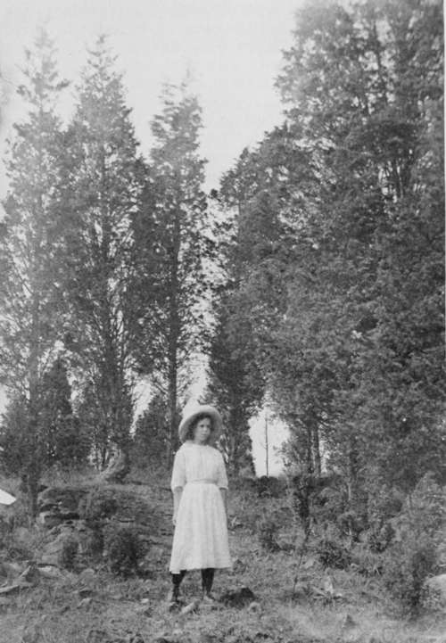

Chapter XVII. The Management Of Large Country Places
Description
This section is from the book "Landscape Gardening", by Andrew Jackson Downing. Also available from Amazon: Landscape Gardening.
Chapter XVII. The Management Of Large Country Places
COUNTRY places that may properly be called ornamental † are increasing so fast, especially in the neighborhood of the large cities, that a word or two more touching their treatment will not be looked upon as out of place here.
All our country residences may readily be divided into two classes. The first and largest class is the suburban place of from five to twenty or thirty acres; the second is the country-seat, properly so called, which consists of from thirty to five hundred or more acres.
In all suburban residences, from the limited extent of ground, and the desire to get the utmost beauty from it, the whole, or at least a large part of the ornamental portion, must be considered only as pleasure grounds — a term used to denote a garden scene, consisting of trees, shrubs, and flowers, generally upon a basis of lawn, laid out in walks of different styles, and kept in the highest order. The aim in this kind of residence is to produce the greatest possible variety within a given space and to attain the utmost beauty of gardening as an art by the highest keeping and culture which the means of the proprietor will permit.
Of this kind of pleasure ground residence, we have numberless excellent examples, and perhaps nowhere more admirable specimens than in the neighborhood of Boston. Both in design and execution these little places will, at the present moment, bear very favorable comparison with many in older countries. The practical management of such places is also very well understood and they need no especial mention in these remarks.
* Original date of March, 1851.
† Attention has been called elsewhere in this volume to Mr. Downing's habitual use of this word "ornamental" — a word which has become unfashionable and distasteful to the present generation. It is well to remember that this word carried no unpleasant connotations in his day. — F. A. W.
But in the larger country places there are ten instances of failure for one of success. This is not owing to the want of natural beauty, for the sites are picturesque, the surface varied, and the woods and plantations excellent. The failure consists, for the most part, in a certain incongruity and want of distinct character in the treatment of the place as a whole. They are too large to be kept in order as pleasure grounds, while they are not laid out or treated as parks. The grass which stretches on all sides of the house is partly mown for lawn, and partly for hay; the lines of the farm and the ornamental portion of the grounds meet in a confused and unsatisfactory manner, and the result is a residence pretending to be much superior to a common farm and yet not rising to the dignity of a really tasteful country-seat.
It appears to us that a species of country place particularly adapted to this country, has not, as yet, been attempted, though it offers the largest possible satisfaction at the least cost.
We mean a place which is a combination of the park-like and pastoral landscape. A place in which the chief features should be fine forest trees, either natural or planted, and scattered over a surface of grass, kept short by the pasturage of fine cattle. A place, in short, where sylvan and pastoral beauty, added to large extent and great facility of management, would cost no more than a much smaller demesne where a large part is laid out, planted, and kept in an expensive though still unsatisfactory manner.
There are sites of this kind, already prettily wooded, which may be had in many desirable localities at much cheaper rates than the improved sites. On certain portions of the Hudson, for instance, we could purchase to-day finely wooded sites and open glades, in the midst of fine scenery in fact what could, with very trifling expense be turned into a natural park — at $60 per acre, while the improved sites will readily command $200 or $300 per acre.
Fig. 35. Natural Woodland — Junipers.
Considerable familiarity with the country-seats on the Hudson, enables us to state that, for the most part, few persons keep up a fine country place, counting all the products of the farm land attached to it, without being more or less out of pocket at the end of the year. And yet there are very few of the large places that can be looked upon as examples of tolerable keeping.
The explanation of this lies in the high price of all kinds of labor, which costs us nearly double or treble what it does on the other side of the Atlantic, and the comparatively small profits of land managed in the expensive way common on almost all farms attached to our Atlantic country-seats. The remedy for this unsatisfactory condition of the large country places is, we think, a very simple one — that of turning a large part of their areas into park meadow, and feeding it, instead of mowing and cultivating it.*
The great and distinguishing beauty of England, as every one knows, is its parks. And yet the English parks are only very large meadows, studded with oaks and elms — and grazed — profitably grazed, by deer, cattle, and sheep. We believe it is a commonly received idea in this country, with those who have not travelled abroad, that English parks are portions of highly-dressed scenery — at least that they are kept short by frequent mowing, etc. It is an entire mistake. The mown lawn with its polished garden scenery, is confined to the pleasure grounds proper — a spot of greater or less size, immediately surrounding the house, and wholly separated from the park by a terrace wall, or an iron fence, or some handsome architectural barrier. The park, which generally comes quite up to the house on one side, receives no other attention than such as belongs to the care of the animals that graze in it. As most of these parks afford excellent pasturage, and though apparently one wide, unbroken surface, they are really subdivided into large fields, by wire or other invisible fences, they actually pay a very fair income to the proprietor, in the shape of good beef, mutton, and venison.
* Although conditions have changed greatly for the better since Mr. Downing wrote these lines, the practice of pasturing park lands with cattle or sheep has not become popular. It seems quite possible that this practice might still be extended, and the recommendation of Mr. Downing to that effect may now be renewed. — F. A. W.
Certainly, nothing can be a more beautiful sight in its way, than the numerous herds of deer, short-horned cattle and fine sheep, which embroider and give life to the scenery of an English country home of this kind.* There is a quiet pastoral beauty, a spaciousness and dignity, and a simple feeling of nature about it which no highly decorated pleasure grounds or garden scenery can approach, as the continual surrounding of a country residence. It is, in fact, the poetical idea of Arcadia, a sort of ideal nature, softened refined, and ennobled, without being made to look artificial.
Of course any thing like English parks, so far as regards extent, is almost out of the question here; simply because land and fortunes are widely divided here, instead of being kept in large bodies, intact, as in England. Still, as the first class country-seats of the Hudson now command from $50,000 to $75,000, it is evident that there is a growing taste for space and beauty in the private domains of republicans. What we wish to suggest now is simply that the greatest beauty and satisfaction may be had here, as in England (for the plan really suits our limited means better), by treating the bulk of the ornamental portion as open park pasture, and thus getting the greatest space and beauty at the least original expenditure and with the largest annual profit.
To some of our readers who have never seen the thing the idea of a park pastured by animals almost to the very door will seem at variance with all decorum and elegance. This, however, is not actually the case. The house should either stand on a raised terrace of turf, which, if it is a fine mansion, may have a handsome terrace wall, or if a cottage, a pretty rustic or trellis fence, to separate it from the park. Directly around the house, and stretching on one or more sides, in the rear, lie the more highly dressed portions of the scene, which may be a flower-garden and shrubbery set in a small bit of lawn kept as short as velvet — or may be pleasure grounds, fruit, and kitchen-gardens, so multiplied as to equal the largest necessities of the place and family. All that is to be borne in mind is, that the park may be as large as you can afford to purchase — for it may be kept up at a profit — while the pleasure grounds and garden scenery, may, with this management, be compressed into the smallest space actually deemed necessary to the place, thereby lessening labor and bestowing that labor in a concentrated space, where it will tell.
* All attempts to render our native deer really tame in home grounds have, so far as we know, failed among us, though with patience the thing may doubtless be done. It would be well worth while to import the finer breeds of the English deer, which are thoroughly domesticated in their habits, and the most beautiful animals for a park. — A. J. D.
The practical details of keeping the stock upon such a place, are familiar to almost every farmer. Of course in a country place only comely animals would be kept, and a preference would be given to breeds of fine stock that "take on flesh" readily, and command the best price in the market. In cases where an interest is taken in breeding cattle provision must be made in the shape of hay and shelter for the whole year round; but we imagine the most profitable, as well as least troublesome mode, to the majority of gentlemen proprietors would be to buy the suitable stock in the spring, put it in good condition, and sell it again in the autumn. The sheep would also require to be folded at night to prevent the flocks from being ravaged by dogs.
With this kind of arrangement and management of a country place the owner would be in a position to reap the greatest enjoyment with the least possible care. To country gentlemen ignorant of farming, such an extent of park, with its drives and walks, along with its simplicity of management, would be a relief from a multitude of embarrassing details; while to those who have tried, to their cost, the expenses of keeping a large place in high order, it would be an equal relief to the debtor side of the cash account.
Continue to:
- prev: How To Arrange Country Places. Continued
- Table of Contents
- next: Chapter XVIII. Country Places In Autumn